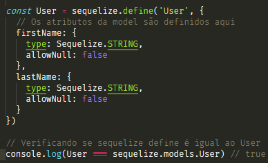
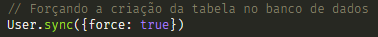
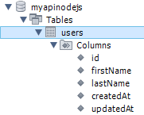

No artigo passado eu mostrei como instalar o Sequelize e o mysql2 e criar a conexão como banco de dados. Caso você não tenha lido o artigo, leia aqui.
Os Models são a essência do sequelize. Em termos gerais um modelo (model) é uma abstração que representa um objeto. Trazendo para o conceito de banco de dados, representa uma tabela em seu banco de dados. Já no sequelize, é uma classe que estende Model.
Ou seja, a classe model criada por você vai herdar da Model do Sequelize.
O model diz ao sequelize qual é o nome da tabela no banco de dados, quais colunas ela possui (e seus tipos).
Um model no Sequelize tem um nome, que não precisa necessariamente ser o mesmo nome da tabela que ele representa no banco de dados. Por convenção os models tem nomes no singular (ex. Usuario), enquanto as tabelas tem nomes no plural (ex. Usuarios).
Os models podem ser definidos de duas formas no Sequelize:
Chamando sequelize.define(NomeDaModel, atributos, opções) ou estendendo a model e chamando o init(atributos, opções)
Aqui irei mostrar apenas o primeiro caso, utilizando define()
Depois que o model é definido, ele estará disponível em sequelize.models por seu nome de model.
Considere que queremos criar uma model para representar os usuários, que vão ter firstName e um lastName. Daremos a model o nome de User e a tabela no banco de dados de Users.
 Comandos para criar uma model com nome de User.O código acima cria uma model com nome de 'User', contendo 2 métodos 'firstName' e 'lastName', ambos do tipo string e não nulos e atribui a variável 'User'. note que 'define()' é um metodo interno do sequelize.
Note que, no método acima, não criamos o nome da tabela 'Users' explicitamente. Apenas fornecemos o nome da model 'User'.
Não forneci o nome da tabela propositalmente, pois por padrão quando o nome da tabela não é fornecido, Sequelize automaticamente cria uma tabela com o nome pluralizado da model. Essa pluralização é feita internamente pela biblioteca 'inflection', Sendo assim nossa tabela recebe o nome 'Users'.
Caso você não queira essa comportamento padrão, você pode usar a opção do 'freezeTableName: true'. Dessa forma Sequelize dara a tabela o mesmo nome da model, nesse caso 'User'.
Seu código ficara como mostrado na imagem abaixo.
Você também pode dizer ao Sequelize qual o nome que você quer dar a tabela.
Para isso basta substituir o 'freezeTableName: true' por 'tableName: "NomeQueQuerDarATabela"'.
Seu código ficara como mostrado na imagem abaixo.
Quando você cria a Model, está infomando ao Sequelize algumas coisas relacionadas a sua tabela no banco de Dados.
Mas, e no caso da tabela não existir no banco de dados? ou se ela existir, mas tiver colunas diferentes, mais ou menos colunas ou qualquer outra diferença?
Bom nesse caso teremos que fazer uma sincronização da model. Para isso podemos chamar a função 'model.sync(opções)'. Essa é uma função assíncrona que retorna uma promise.
Quando essa função é chamada o Sequelize executa uma consulta SQL ao banco de dados.
(Note que isso altera apenas a tabela no banco de dados e não na model)
User.sync() - cria a tabela se ela não existir, caso ela exista não fara nada.
User.sync({force: true}) - descarta a tabela existente e cria uma nova.
User.sync({alter: true}) - verifica a tabela existente no banco de dados e faz as alterações necessárias conforme a Model.
Sendo assim para criar efetivamente a tabela no banco de dados digite o código da imagem abaixo.
 Código para criar efetivamente a tabela no db.A estrutura do seu banco de dados ficara semelhante a isso:
 Estrutura da tabela no banco de dados.Bom... Acho que é isso, com esse artigo e o anterio espero que voçê possa ser capaz de criar suas proprias conexões e models utilizando o sequelize.
Muito obrigado, até a proxima! \0>